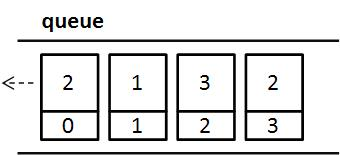
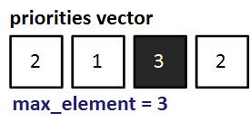
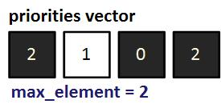
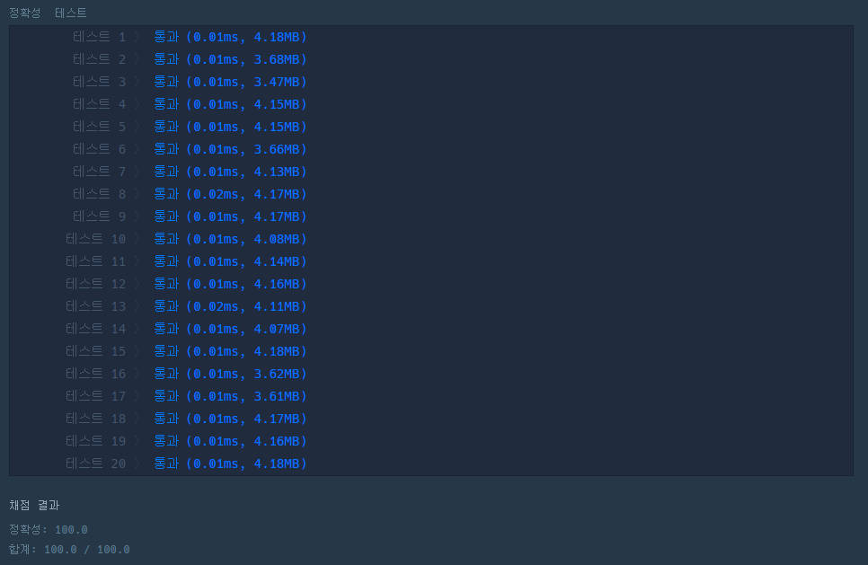

#INFO
분류 : 스택/큐
난이도 : LEVEL2
출처 : https://school.programmers.co.kr/learn/courses/30/lessons/42587
프로그래머스
코드 중심의 개발자 채용. 스택 기반의 포지션 매칭. 프로그래머스의 개발자 맞춤형 프로필을 등록하고, 나와 기술 궁합이 잘 맞는 기업들을 매칭 받으세요.
programmers.co.kr
#SOLVE
queue 자료구조를 이용해 문제를 풀이하였습니다.
문제에서 주어진 priorities 벡터의 중요도 정보를 queue를 하나 선언하여 차례로 저장합니다.
단, 같은 중요도를 가진 원소의 정보를 구분할 수 있어야 하기에 pair를 이용하여 중요도와 인덱스를 같이 저장했습니다.
queue<pair<int, int>> printer;
for(int i = 0; i < priorities.size(); ++i)
printer.push(make_pair(priorities[i], i));
queue의 원소를 pop하는 기준은 다음과 같습니다.
1. 현재 문서가 가장 높은 중요도를 가지고 있는 경우. 즉, 자기 자신의 차례인 케이스
1.1 자기 자신의 차례이고, 그 문서가 location인 케이스 (사용자가 인쇄를 요청한 문서인 경우)
1.2 자기 자신의 차례이지만, 그 문서가 location이 아닌 케이스 (사용자가 인쇄를 요청하지 않은 문서인 경우)
2. 현재 문서가 가장 높은 중요도를 가지고 있지 않은 경우. 즉, 자기 자신의 차례가 아닌 케이스
저는 현재 문서가 가장 높은 중요도를 가지고 있는 지 판별하기 위한, max_element 변수를 하나 선언했습니다.
max_element 변수는 priorities vector에서 가장 높은 값으로 설정됩니다.
int max_value = *max_element(priorities.begin(), priorities.end());
그리고, 만약 max_element 크기의 중요도를 가진 문서가 queue에서 빠져 나오는 경우 해당 위치의 중요도를 0으로 바꾼 뒤 priorities vector 내부의 중요도의 최댓값을 다시 탐색하여 max_element 변수에 저장합니다.,

위 과정을 코드로 표현하면 다음과 같습니다.
while(!printer.empty()){
// 본인 순서 O
if(printer.front().first == max_value){
// 본인 순서 O, 인덱스 O
if(printer.front().second == location){
answer++;
break;
}
// 본인 순서 O, 인덱스 X
else{
priorities[printer.front().second] = 0;
max_value = *max_element(priorities.begin(), priorities.end());
printer.pop();
answer++;
}
}
// 본인 순서 X
else{
printer.push(printer.front());
printer.pop();
}
}#CODE
#include <string>
#include <vector>
#include <algorithm>
#include <queue>
using namespace std;
int solution(vector<int> priorities, int location) {
int answer = 0;
int max_value = *max_element(priorities.begin(), priorities.end());
queue<pair<int, int>> printer;
for(int i = 0; i < priorities.size(); ++i)
printer.push(make_pair(priorities[i], i));
while(!printer.empty()){
// 본인 순서 O
if(printer.front().first == max_value){
// 본인 순서 O, 인덱스 O
if(printer.front().second == location){
answer++;
break;
}
// 본인 순서 O, 인덱스 X
else{
priorities[printer.front().second] = 0;
max_value = *max_element(priorities.begin(), priorities.end());
printer.pop();
answer++;
}
}
// 본인 순서 X
else{
printer.push(printer.front());
printer.pop();
}
}
return answer;
}